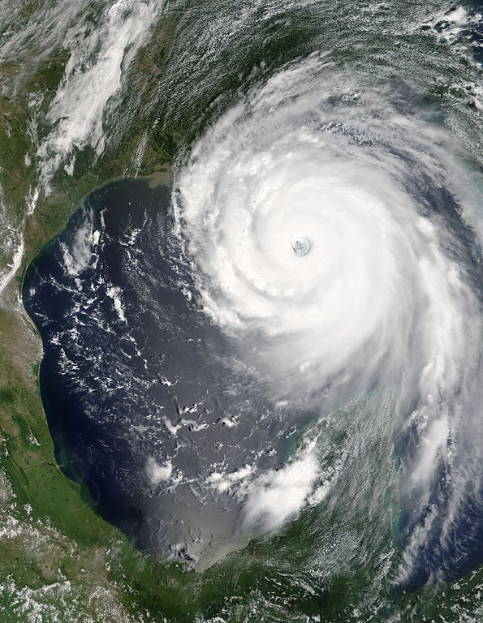
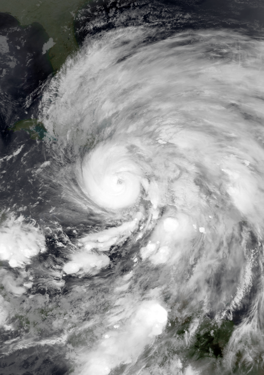
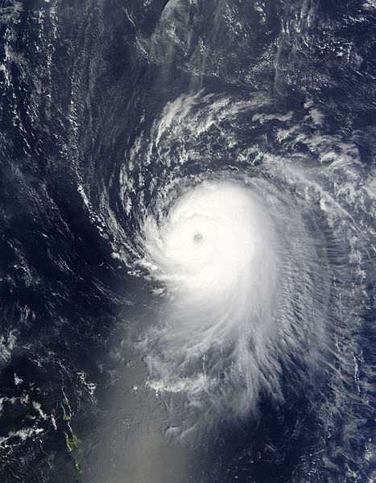
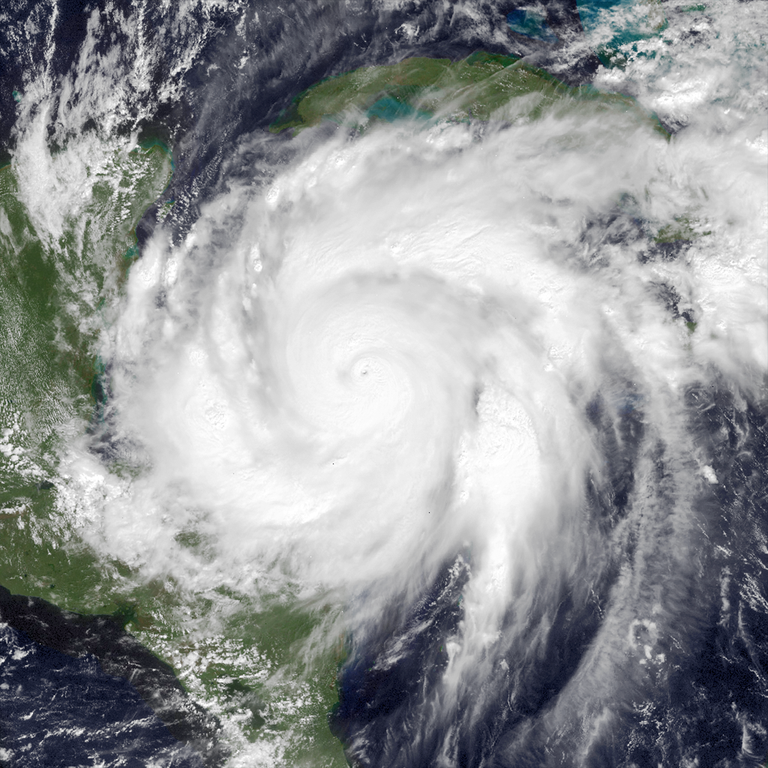
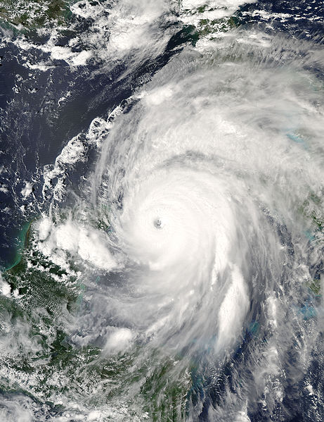
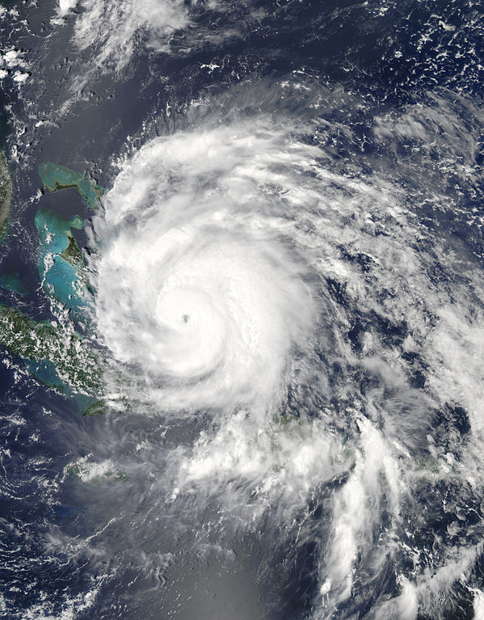

There is no dispute that over the past fifty years, the average global temperature has increased at the fastest rate seen in all of recorded history. The exact cause of global warming is one of the most debated and politicized issues in the 21st century, but there is no doubt that there has been an alarming rise in the overall mean global temperature in recent decades. It would be easy to simply think that there is no possible way that a few degrees could make a significant difference in the average person’s life, but that claim is entirely false.
Scientists and recent research support that Earth’s rising temperatures are having an adverse number of noticeable and dangerous effects. For example, scientists expect a rise in extreme heat waves, which can be life threatening if overexposed to the sun, and additionally an increase in the frequency and severity of droughts.However, one of the most ominous impending effects of global warming lies in the potential for much more powerful and deadly hurricanes/cyclones in tropical regions all over the world.
One of the needed ingredients for a tropical system’s growth is a sustainable energy source, which appears in the from of the warmed summer tropical and subtropical waters on Earth’s surface. With an increase in atmospheric temperatures comes a correlated rise in sea surface temperatures, generating more fuel for potential storms to grow bigger and stronger. Since the early 1980s in the Atlantic basin, there has been a fairly clear upsurge in the amount of category 4 and category 5 hurricanes (the two strongest categories on the Saffir-Simpson scale). Between the years 1984 to 2012, the average wind speed found in tropical cyclones in the Atlantic increased by about 3 mph. The stronger the hurricane, the more severe the potential damage is to people, animals and the environment as a whole. We must stay alert and aware of the growing possibility of stronger hurricanes in the tropics, as the average Atlantic land falling hurricane causes around 1.8 billion dollars of damage.
Let’s look at some noticeable land falling hurricanes since 2000 and the damage they left in their wake:
|  | Hurricane Katrina Year:2005 Peak Strength: 175 mph; 902 mb Damage: 108 Billion Dollars |
|  | Hurricane Sandy Year:2012 Peak Strength: 115 mph; 940 mb Damage: 75 Billion Dollars |
|  | Hurricane Ike Year:2008 Peak Strength: 145 mph; 935 mb Damage: 37.5 Billion Dollars |
|  | Hurricane Wilma Year:2005 Peak Strength: 185 mph; 882 mb Damage: 29.4 Billion Dollars |
|  | Hurricane Ivan Year:2004 Peak Strength: 165 mph; 910 mb Damage: 23.3 Billion Dollars |
|  | Hurricane Irene Year:2011 Peak Strength: 120 mph; 942 mb Damage: 16.6 Billion Dollars |
In fact, NINE out of the top ten costliest hurricanes have occurred since the year 2000.
As the Earth continues to warm at historical rates never seen before, we must take it upon ourselves to stay cautious and be prepared for anything Mother Nature could potentially throw at us. You do not want to be forced to create an evacuation or emergency plan last minute with a life-threatening storm already on its way.
For more information on how to get prepared, visit: http://www.nhc.noaa.gov/prepare/ready.php
Information Sources:
https://www.nrdc.org/stories/global-warming-101
https://www.gfdl.noaa.gov/global-warming-and-hurricanes/
Image Sources:
All images used in the creation of this website were categorized as public domain by NASA. For more information, visit https://www.nasa.gov/
Website Created by Alan Ilyayev
Univeristy of Georgia, Class of 2019